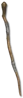

Heyday

Light of Ra
Elder Staff
Damage: 80-93 (two-handed)
Required Level: 80
+5 to Lightning Skills
+3-5 to Thunder Storm (class only)
+30-50% to Lightning Skill Damage
+30-50% Faster Cast Rate
Level 15-20 Holy Shock Aura When Equipped
Socketed (3-4)
+3-5 to Lightning Mastery (class only)
+5 to Light Radius
Attacker Takes Damage of X (X = 1.25 x character level)
Unique Staff
Light of Ra
- Type
- Staff
- Base
- Elder Staff
- Tier
- Elite
- Required level
- 80
- Item level
- 75
- Required strength
- 44
- Required dexterity
- 37
- Max sockets
- 4